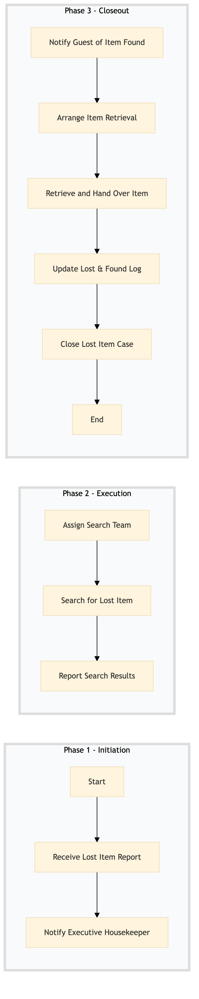

| Role | Steps |
|---|---|
| Front Desk Agent | 1.1 1.2 3.1 3.2 |
| Executive Housekeeper | 1.2 2.1 3.4 3.5 |
| Housekeeping Staff | 2.2 2.3 3.3 |
| Step | Name | Role | System | Input | Output | KPI | Dec? | Exc? | Pain Point / Risk |
|---|---|---|---|---|---|---|---|---|---|
| 1.1 | Receive Lost Item Report | Front Desk Agent | Oracle OPERA Cloud | Guest report via phone, email, or in-person | Lost item report logged in Oracle OPERA Cloud | Less than 3 minutes to log the report | N | Y | Handling multiple reports simultaneously |
| 1.2 | Notify Executive Housekeeper | Front Desk Agent | Oracle OPERA Cloud | Lost item report | Notification to Executive Housekeeper | Less than 5 minutes to notify | N | Y | Ensuring timely communication |
| 2.1 | Assign Search Team | Executive Housekeeper | Oracle OPERA Cloud | Notification from Front Desk Agent | Search team assigned and notified | Less than 10 minutes to assign | N | Y | Coordinating with multiple departments |
| 2.2 | Search for Lost Item | Housekeeping Staff | Oracle OPERA Cloud | Assigned search task | Search log and findings | Less than 30 minutes per room searched | Y | Y | Efficiently searching large areas |
| 2.3 | Report Search Results | Housekeeping Staff | Oracle OPERA Cloud | Search log and findings | Updated report in Oracle OPERA Cloud | Less than 5 minutes to update | N | Y | Accurately documenting search results |
| 3.1 | Notify Guest of Item Found | Front Desk Agent | Oracle OPERA Cloud | Search report with item found | Notification to guest | Less than 5 minutes to notify | N | Y | Handling sensitive information |
| 3.2 | Arrange Item Retrieval | Front Desk Agent | Oracle OPERA Cloud | Guest's confirmation to retrieve item | Arrangement for item retrieval | Less than 10 minutes to arrange | N | Y | Coordinating with guest schedules |
| 3.3 | Retrieve and Hand Over Item | Housekeeping Staff | Oracle OPERA Cloud | Arrangement for item retrieval | Item handed over to guest | Less than 5 minutes per retrieval | N | Y | Ensuring secure handover |
| 3.4 | Update Lost & Found Log | Executive Housekeeper | Oracle OPERA Cloud | Item retrieval confirmation | Updated lost & found log | Less than 5 minutes to update | N | Y | Maintaining accurate logs |
| 3.5 | Close Lost Item Case | Executive Housekeeper | Oracle OPERA Cloud | Updated lost & found log | Closed case in Oracle OPERA Cloud | Less than 2 minutes to close | N | Y | Finalizing case documentation |
This process outlines how a Marriott full-service hotel manages lost and found items. It ensures that lost items are tracked, reported, and returned to guests efficiently.